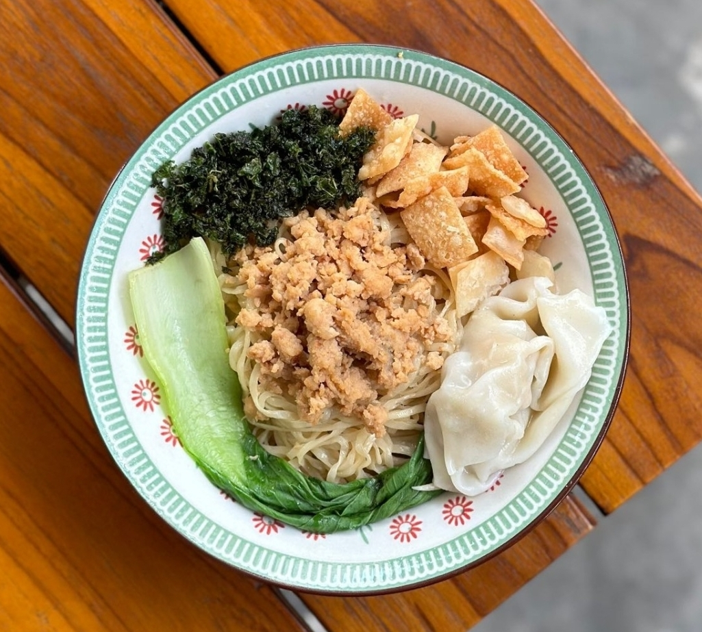
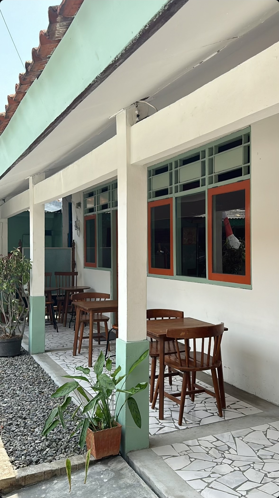
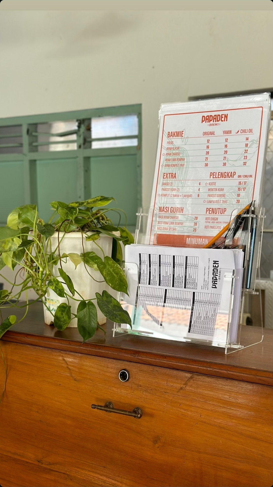
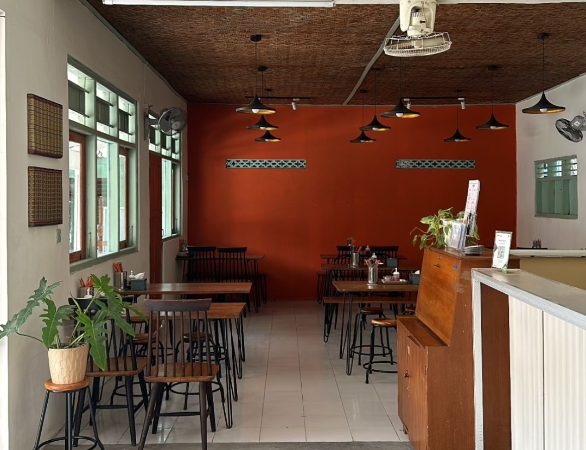

Menu Bakmi
Pilihan Rasa Mie: Asin · Yamin · Chili Oil (+2K)
Hanya varian Chili Oil yang dikenakan biaya tambahan Rp2.000.
Hanya varian Chili Oil yang dikenakan biaya tambahan Rp2.000.
Dibuat dari bahan pilihan dengan cita rasa autentik yang membuat setiap suapan menjadi pengalaman istimewa.


Papaden Bakmi lahir dari kecintaan terhadap cita rasa bakmi rumahan yang autentik. Kami believe bahwa setiap mangkuk bakmi harus membawa kebahagiaan — dibuat dengan resep turun-temurun, bahan segar, and sentuhan penuh cinta.
Setiap suapan adalah perjalanan rasa yang menggugah, menghadirkan kehangatan rumah dalam setiap gigitan. Dari dapur kami ke meja Anda, kami hadir untuk membuat momen makan Anda istimewa.
Nikmati pengalaman visual dari setiap sudut Papaden Bakmi.


Kami hanya menggunakan bahan-bahan segar berkualitas tinggi dari petani lokal.
Semua hidangan bebas dari pengawet dan bahan kimia berbahaya.
Setiap pesanan dimasak langsung untuk memastikan kesegaran dan cita rasa.
Nikmati cita rasa premium dengan harga yang ramah di kantong.
"Bakmi klasiknya luar biasa! Rasanya autentik dan bahan-bahannya segar. Saya jadi pelanggan tetap."
"Wonton kuahnya paling enak! Kuahnya gurih dan wontonnya kenyal. Cocok untuk santap siang."
"Pelayanan ramah, tempat bersih, dan makanannya enak! Papaden Bakmi jadi favorit keluarga."
"Ayam Charisu adalah favorit saya! Bumbu meresap sempurna dan dagingnya empuk."
"Roti dinginnya unik! Cocok sebagai pencuci mulut setelah menikmati bakmi panas."
Pesan sekarang dan rasakan kelezatan bakmi premium yang dibuat dengan cinta.